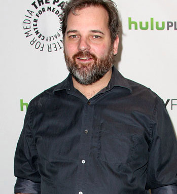

Our Famous Writers
Here are our most famous writers.
Steven Moffat
Steven Moffat's work can veer between high farce and deep introspection, often in successive lines of the same script. But his trademark is his meticulous and enterprising use of structure (for example, parallel story strands and experiments with chronology or repetition) to confound audiences. Never knowingly modest, Moffat unassumingly summed up this ability: "There are just basic rules how plotting should work and how you can make events seem both surprising and inevitable, which is the challenge of all writing." This capacity for delight and surprise was evident in Moffat's very first TV work Press Gang (ITV, 1989-93). Born 18 November 1961 in Paisley, Scotland, Moffat began writing theatre plays in the mid-80s while teaching, but his break came when a TV crew from religious travelogue Highway (ITV, 1983-93) visited his father's own school. Moffat Senior told the crew of his idea for a children's series based around a junior newspaper, which could be written by his son. Mixing acid one-liners and serious teenage issues, Press Gang deservedly won BAFTA and RTS awards. Audiences were frequently wrongfooted: one episode opened with the apparent funeral of a member of the paper's team, before slowly teasing out the victim's identity. But Moffat was politely fired from comedy drama Stay Lucky (ITV, 1989-93) for failing to write for established characters, and he has stuck largely with sole-authored pieces ever since. Press Gang director Bob Spiers suggested he try sitcom, and in 1990 Moffat's then current divorce provided source material for the pilot of BBC2 black comedy Joking Apart (1993-95), which combined hyper-plotted farce and painful emotional honesty. But Moffat's first high-profile BBC1 series, school-set sitcom Chalk (1997), seemed a step back. Most critics overlooked Nicola Walker's interesting portrayal of a student teacher and focused on lead actor David Bamber's pantomime playing. In 1997, he married TV producer Sue Vertue, and since 1999 much of his work has been produced by Hartswood Films, the independent production company run by his wife and her mother, veteran TV executive Beryl Vertue. It was Hartswood's elaborate sex comedy Coupling (BBC2, 2000-04) which established Moffat as a major talent. Conceived as a more cynical, adult antidote to the sentimental Friends (US, 1994-2004), Coupling roamed the battlefields of the sex wars, distinguishing itself with its sophisticated plotting and supremely filthy wit. Moffat admitted the male characters were based on aspects of himself: a considerate would-be new man, a selfish womaniser, a hapless bumbler and a sci-fi geek. Plotting conceits included a split-screen episode and another repeating the same events three times from the perspectives of different characters. Short-lived remakes aired in Greece and the US. A Doctor Who fan since the late '60s, Moffat had written spoof sketches for Comic Relief in 1999 (with Rowan Atkinson as the Doctor), which were lovingly observed, joyously crude and strangely moving. He was a key writer for the revived Doctor Who (BBC, 2005-), his standout six scripts for the first four series winning him the respect of legions of fans new and old, plus a BAFTA (for the tense 'Blink') and three Hugos - a respected US SF award rarely won by British TV shows. But his own violent, sexy mini-series reworking Robert Louis Stevenson's 'Dr Jekyll and Mr Hyde' rated poorly in a Saturday night bearpit timeslot. But Jekyll (BBC, 2007), starring James Nesbitt, is among his finest work, building in unexpected directions over six hours. In mid-2009 he inherited the mantle of Doctor Who showrunner from Russell T. Davies, coinciding with the decision to replace the departing David Tennant with relative unknown Matt Smith as the 11th Doctor. Such was the lure of the series' that Moffat relinquished writing duties on Steven Spielberg and Peter Jackson's projected film series The Adventures of Tintin (submitting just one script of the contracted three). Similarly, a Sherlock Holmes TV series was handed over to co-creator Mark Gatiss to produce. Moffat looks set to instigate a stylistic overhaul for his time in charge of Doctor Who - the series thrives on change and his challenge is to reinvigorate a franchise now at the end of a massively successful cycle.
Dan Harmon
Dan Harmon is an American producer, writer, actor, and voice artist. He is best known for creating and producing NBC’s sitcom ‘Community’, co-creating animated the TV series ‘Rick and Morty’ and developing/hosting the weekly podcast ‘Harmontown.’ He is also known as the co-founder of the alternative TV network/website Channel 101. As a writer, Harmon has published a few books including ‘You'll Be Perfect When You're Dead’. He has worked as a voice actor as well, lending his voice to several animated projects such as ‘Mary Shelley's Frankenhole’, 'The Simpsons', 'Axe Cop' and 'Rick and Morty', to name a few. Today, Harmon has emerged as a multi-talented star who has tasted success in a wide range of fields in the entertainment arena. His impeccable work ethic and strong skills have enabled him to make a name for himself as a producer, actor, and writer. Having millions of fans worldwide, the American artiste has become an inspiration for many young talents in the entertainment industry. On a personal note, Harmon is the ex-husband of famous podcast host and comedian, Erin McGathy. Harmon discovered that he was suffering from Asperger syndrome in 2011. Dan Harmon was born on January 3, 1973 in Milwaukee, Wisconsin, the USA. He studied at Brown Deer High School and later graduated from the Marquette University. He also attended Glendale Community College for a brief period of time. Dan Harmon started his career in the entertainment industry in the 1990s. Initially he was a part of the improvisational comedy organization ComedySportz Milwaukee alongside comedian Rob Schrab. In 1996, the duo created the album ‘Take Down the Grand Master’. Harmon then co-created the TV pilot ‘Heat Vision and Jack’ in 1999. He then came up with a number of Channel 101 shows featuring Sarah Silverman, Black and Drew Carey. He appeared in two episodes of the Channel 101 web series titled ‘Yacht Rock’, portraying a fictionalized version of Ted Templeman. Harmon next served as the executive producer, creator, and a featured performer in the sketch show ‘Acceptable.TV’. In 2006, he, along with Rob Schrab wrote the screenplay for the hit film ‘Monster House’. Soon after this, he wrote a part of Schrab's comic book series titled ‘Scud: The Disposable Assassin’ as well as its spin-off series ‘La Cosa Nostroid’. He co-created ‘The Sarah Silverman Program’ which ran from 2007 to 2010. He also served as a writer for many of its episodes. From 2009 to 2012, the American artiste served as the showrunner and executive producer of NBC’s sitcom ‘Community’. On June 1, 2013, he announced that he would be returning to ‘Community’ as the co-showrunner. The following year, NBC cancelled the show after its fifth season. Soon after this, Yahoo! renewed the show as a 13-episode web series on Yahoo! Screen. On May 23, 2011, Dan Harmon started hosting a monthly live comedy program and podcast called ‘Harmontown.’ The program served as an inspiration for the animated series ‘HarmonQuest’ that featured guests like Curtis Armstrong, Mitch Hurwitz, Jason Sudekis, Aubrey Plaza, and Erin McGathy among many others. Harmon voiced the character of Dr. Jekyl in the animated series ‘Mary Shelley's Frankenhole’ in 2012. The following year, he appeared in one episode each of 'Arrested Development' and 'Axe Cop'. He also published his book ‘You'll Be Perfect When You're Dead’ in 2013. He then got featured as himself in the documentary ‘Back in Time’ in 2015. That year, the American artiste also served as an executive producer for the flick ‘Anomalisa’. He also narrated an episode of ‘Drunk History’ the same year. He served as the writer as well as the executive producer of the comedy series ‘Great Minds with Dan Harmon’ in 2016. In 2017, Harmon appeared in an episode each of ‘Dr. Ken’, ‘Animals’ and ‘The Simpsons’. That year, he also began starring in YouTube Red’s comedy show ‘Good Game’. He also served as the show’s executive producer.